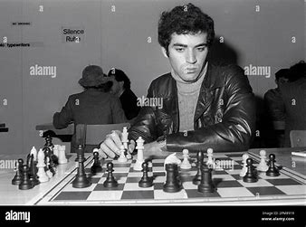

Actualités
Garry Kasparov est toujours actif dans de nombreux domaines, notamment en politique et en écriture.

Réalisations
Ancien champion du monde d'échecs, Kasparov est reconnu pour ses victoires et son jeu innovant.
Événements passés/à venir
Kasparov continue de participer à des événements mondiaux en tant que conférencier sur la politique.